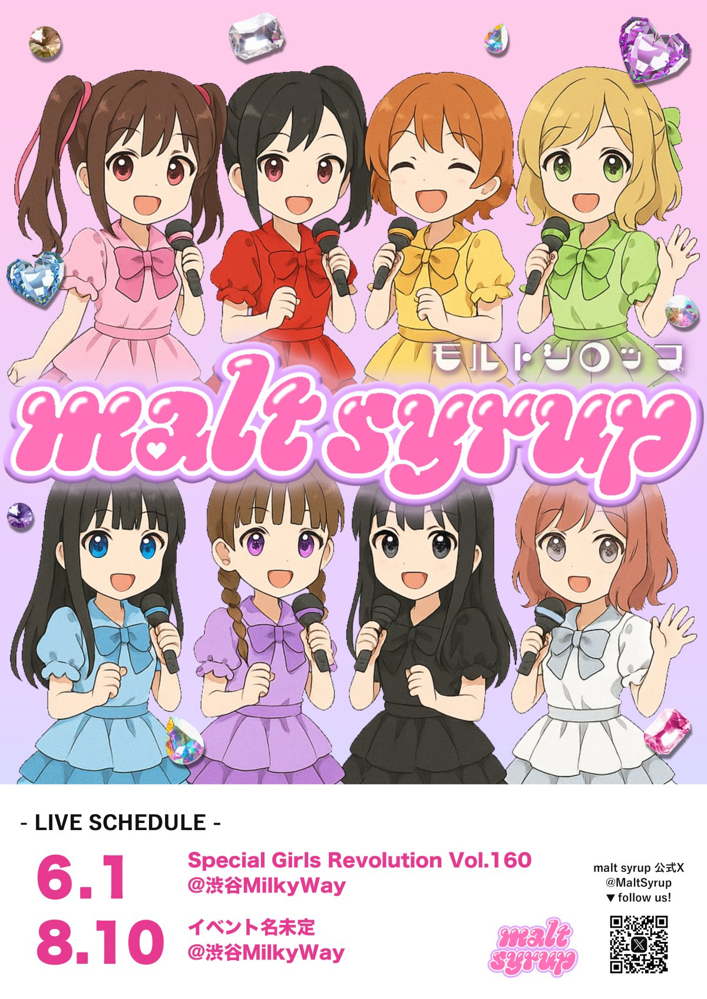

EVENT
出演予定
🍬 6月1日(土) Special Girls Revolution Vol.160 ＠渋谷Milkyway
🍬お知らせ🍬
— malt syrup (@MaltSyrup) 2024年5月2日
6月1日に行われる、SGR vol.160に出演するメンバーを公開いたします💓
チケット購入特典は、
【全員集合サイン入りブロマイド】です！
malt syrupからの購入をお待ちしております🍬https://t.co/JCHp34t0IP pic.twitter.com/Jam1rZnU70
🍬 8月10日(土) Special Girls Revolution Vol.172 ＠渋谷Milkyway
🍬お知らせ🍬
— malt syrup (@MaltSyrup) July 16, 2024
8月10日(土)
Special Girls Revolution Vol.172
に出演いたします！
チケットご予約特典は【オリジナルミニうちわ】です🎐🐠
🔗チケットのご予約はこちらから⬇️https://t.co/lxkG43k1wP#もるしろ pic.twitter.com/ptfXI63l1U
過去のイベント
🍬 1月28日(日) Special Girls Revolution Vol.142 ＠渋谷Milkyway
🍬御礼🍬
— malt syrup (@MaltSyrup) January 28, 2024
本日はSGR Vol.142にお越しくださりありがとうございました❣️
りーちゃんプロデュースのもるしろステージはいかがでしたか✨
ぜひ #もるしろ で感想を教えてください☺️
撮影いただいたデータはmalt syrup公式XのDMにお送りください！
今後ともmalt syrupをよろしくお願いいたします🍬 pic.twitter.com/gUgZFEnR2f
ご来場ありがとうございました！